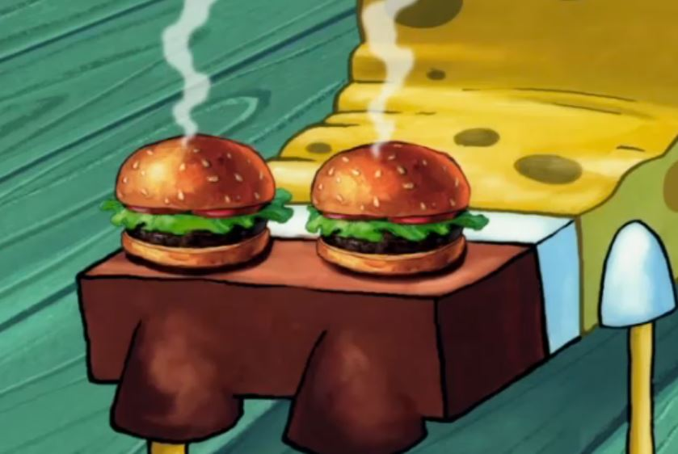

Krabby Patties
Secret Formula!

Description
Just don't tell Plankton okay?
Ingredients
Burger Patties
- 1/3 lb. ground beef (80 percent lean)
- 2 tsp. Old Bay Seasoning
- 1 tsp Black pepper
- 1 tsp Sea salt
- 4 slices cheddar cheese
King Neptune's Poseidon Powder Aioli
- 1/2 c. mayonnaise
- 1 tsp. Old Bay Seasoning
Sandwich
- 4 sesame seed buns, sliced in half
- ketchup
- mustard
- 1 jar dill pickle slices
- 1 red onion, sliced
- 1 tomato, sliced
- 4 leaves of butter lettuce
Instructions
Make the burger patties
- Heat a grill pan or sauté pan over medium heat. As it heats, combine ground beef, Old Bay, pepper and salt. Form into four equally sized patties, about 1/3 lb apiece. Set on a platter next to the stovetop. Coat the warmed grill pan with cooking spray and place patties on the pan, cooking each side about 4-5 minutes, or until cooked through to your desired doneness.
- Use a large star-shaped cookie cutter to cut each cheese slice into a star shape. Place the star-shaped cheese on each burger patty, in the last 30 seconds or so of cooking, so it melts a little. Set burger patties aside.
Make King Neptune's Poseidon Powder Aioli
- Stir Mayo and Old Bay until thoroughly combined
Assemble The Sandwich
- Spread Poseidon Powder Aioli on the bottom of each bun. Top with a burger patty, ketchup, mustard, pickles, onion slices, tomato and lettuce. Place the top bun on each burger. Serve!
Back to Recipes